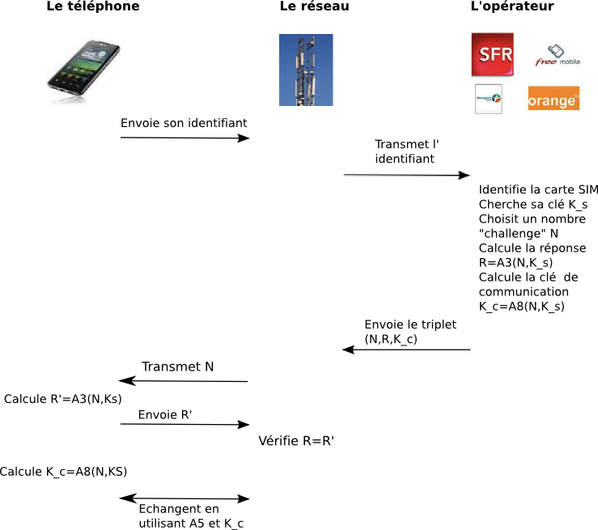

La sécurité des communications téléphoniques sans fil
Le réseau GSM
GSM, Groupe Spécial Mobile, acronyme d'origine française
traduit plus tard en anglais par Global System for Mobile communication,
est un standard développé par l'ETSI (European Telecommunications Standard
Institute) pour les communications entre téléphone portable et réseaux d'opérateurs. Des contraintes de sécurité ont été
incorporées dans ce standard, qui sont :
- authentification du mobile auprès du réseau, afin que l'opérateur sache exactement à qui facturer
la communication;
- préservation de l'anonymat du mobile (quelqu'un qui écoute le réseau ne doit pas savoir
qui se connecte au réseau, notamment afin d'éviter de localiser un téléphone portable);
- la préservation de la confidentialité des conversations, qui doivent être chiffrées pour ne pas être accessibles
aux personnes écoutant le réseau.
Une des difficultés de ce protocole est qu'il fait intervenir non pas deux, mais trois partenaires : le téléphone mobile,
le réseau, et l'opérateur. Le réseau peut en effet appartenir à quelqu'un d'autre que l'opérateur(par exemple, si on est à l'étranger).
Le protocole doit donc être assez souple pour permettre l'interopérabilité entre équipements d'origines différentes.
La première phase du protocole est l'authentification, qui se déroule entre le téléphone, et plus précisément
sa carte SIM (Subscriber Identity Module), et l'opérateur.
Le réseau ne joue ici qu'un rôle d'intermédiaire. Rappelons que la carte SIM est fournie directement par l'opérateur, qui peut y disposer
les informations dont il a besoin.
Lors de sa première connexion au réseau, le téléphone envoie donc son identifiant au réseau.
Ce numéro, unique, révèle notamment à quel opérateur appartient cette carte SIM et identifie la carte SIM parmi toutes
celles distribuées par l'opérateur. Le réseau transmet cet identifiant à l'opérateur. L'opérateur peut alors identifier
la carte SIM (et donc le client qui a souscrit l'abonnement). En particulier, il est possession d'une clé secrète $K_{sec}$
qui a été inscrite dans une partie non accessible en lecture de la carte SIM.
Pour vérifier que personne ne cherche à usurper l'identité de la carte SIM, l'opérateur va alors transmettre
un challenge à cette carte SIM. Il choisit pour cela un nombre aléatoire $N$. A l'aide d'un algorithme baptisé $A3$,
il calcule la réponse à ce challenge. Cette réponse dépend de la clé secrète $K_{sec}$ qui est partagée uniquement
entre l'opérateur et la carte SIM. Autrement dit, l'opérateur calcule $R=A3(N,K_{sec})$. Puisqu'il est aussi hors de question de transmettre
$K_{sec}$ au réseau, l'opérateur, à l'aide d'un autre algorithme baptisé $A8$, calcule aussi une clé de communication $K_C$
qui dépend là-aussi du challenge $N$ et de la clé secrète $K_{sec}$.
L'opérateur envoie alors le triplet $(N,R,K_c)$ au réseau. Celui-ci transmet le challenge $N$ au téléphone. La carte SIM,
à l'aide du même algorithme $A3$ et de la clé secrète $K_{sec}$, calcule la réponse au challenge $R'=A3(N,K_{sec})$ et transmet
sa réponse au réseau. Le réseau compare alors la valeur attendue $R$ avec la valeur retournée $R'$. Si elles coincident,
la carte SIM a rempli le challenge et a prouvé qu'elle était bien en possession de la clé secrète associée
à l'identifiant.
Parallèlement, avec l'algorithme $A8$, la carte SIM est aussi capable de calculer
la clé de communication $K_c$. Il est important de remarquer, et c'est effectivement très important pour la sécurité,
que cette clé ne transite pas par le réseau et ne peut donc pas être interceptée. A ce stade, le réseau et le téléphone sont en possession d'une même clé.
Ils peuvent donc commencer à communiquer, en chiffrant les données à partir d'un algorithme baptisé A5 initialisé par la clé $K_c$.

Remarquons que les algorithmes A3 et A8 sont utilisés par l'opérateur et la carte SIM, qui appartient à l'opérateur.
Ces algorithmes peuvent donc être spécifiques à l'opérateur. En revanche, A5 doit pouvoir être opéré entre n'importe quel téléphone
et n'importe quel réseau : il s'agit donc d'un algorithme standardisé, qui est un chiffrement par flots à partir d'un compteur
et de la clé secrète $K_{sec}$. Cet algorithme n'a pas été rendu public, mais il a été rétro-ingénieré quelques années après sa
première utilisation.
Remarquons que le protocole que nous avons décrit ne répond pas à une des contraintes imposées au préalable :
la préservation de l'anonymat du portable. En réalité, elle est garantie par une petite modification du procédé. La première authentification
du téléphone auprès d'un réseau se déroule exactement comme nous l'avons décrit, à une exception près : au moment où ils sont en possession
d'une clé de communication commune, le réseau commence à envoyer au téléphone un identifiant temporaire. Cet identifiant temporaire, personne
d'autre ne peut y avoir accès puisqu'il est chiffré. Lors d'une authentification ultérieure du téléphone auprès du réseau, le téléphone n'utilisera
pas son identifiant, mais l'identifiant temporaire que le réseau lui a envoyé. De plus, pour plus de confidentialité, le réseau lui fournira
un nouvel identifiant temporaire. Ainsi, l'identité réelle du téléphone portable n'est transmise qu'à la première authentification.
Plus tard, il s'agit d'identifiants temporaires, et à moins d'avoir tracé tous les échanges, il est impossible de savoir de quel
téléphone il s'agit.
Pourtant, ce protocole souffre de plusieurs failles de sécurité. La première est due à la façon dont il est utilisé, et
particulièrement aux réseaux paresseux. En effet,
recevant l'identifiant (même temporaire) d'un téléphone déjà authentifié, le réseau n'a plus besoin de demander à l'opérateur
un triplet $(N,R,K_c)$ puisqu'il est déjà en possession de ces informations. Il peut donc réenvoyer le même challenge au téléphone.
Mais celui-ci donnera la même réponse… Ainsi, quelqu'un qui essaierai de se faire passer pour le téléphone, s'il a intercepté la réponse
au premier challenge, pourra donner une réponse correcte à ce challenge car il s'agit du même! De plus, la clé de communication utilisée
est alors le même, ce qui ne doit jamais être le cas dans le cadre d'un chiffrement par flots. L'autre faille est plus structurelle.
Si le téléphone s'identifie au réseau, l'inverse n'est pas le cas : comment un téléphone peut être sûr de l'identité prétendue du réseau?
La sécurité des communications 3G
Pour pallier à ces défauts, le standard UMTS (Universal Mobile Telecommunication System) dit de 3ème génération, publié par l'ETSI en 2000, a introduit un certain nombre de nouveautés
dans le protocole, dont deux sont essentielles :
- l'authentification du réseau auprès du mobile : lorsque le réseau envoie l'identifiant du téléphone à l'opérateur, ce dernier
lui transmet un numéro d'authentification. Ce numéro ne peut être calculé que par la carte SIM et l'opérateur, ne peut être réutilisé
deux fois. Il garantit à la carte SIM que l'opérateur a confiance en ce réseau.
- la garantie de fraicheur des challenges : la carte SIM interdit d'utiliser un challenge déjà utilisé.